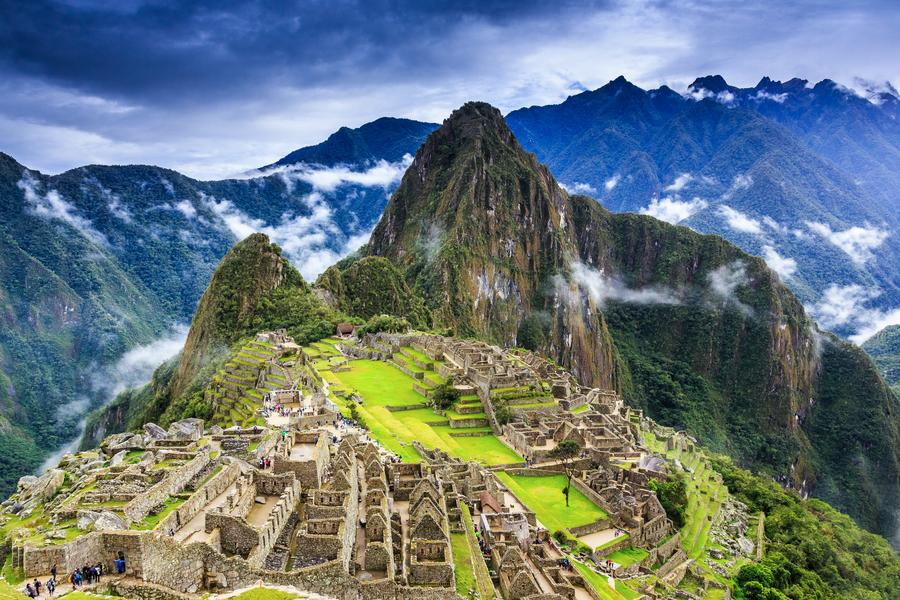

馬丘比丘
馬丘比丘，又譯麻丘比丘，是一座建於前哥倫布時期（15世紀）的印加帝國城市遺蹟，位於秘魯南部的秘魯東部山脈，庫斯科西北方80公里處，整個遺址高聳
在海拔2,430公尺（7,970英尺）的山脊上，俯瞰著烏魯班巴河谷。
與瑪雅文明相比，由於印加文明沒有書面語言的紀錄，直到19世紀末期才有對於發現該遺址的紀錄。考古學家認為，馬丘比丘是薩帕·印卡帕查庫蒂（1438-
1472）建造的，由於獨特的位置、地址特點和發現時間較晚（在1911年），馬丘比丘成了印加帝國最為人所熟悉的標誌。它通常被稱為「印加失落之城」。
馬丘比丘的建築為古典印加風格，並以拋光的砌石墻作為柱體結構。城鎮保存完整的三個設施則為拴日石（Intihuatana）、太陽神殿和三窗廟。為了讓遊客
更好地了解城市最初的樣子，大部分建築都經過了復原重建。到1976年，馬丘比丘約有30%的區域已經恢復，直到至今依然進行恢復工程。1983年，馬丘比丘古
神廟被聯合國教科文組織定為世界遺產，且為文化與自然雙重遺產。2007 年，馬丘比丘被評為世界新七大奇蹟之一。但與此同時，馬丘比丘也面臨著遭旅遊業破壞的擔憂。
歷史事件
人們認為馬丘比丘是印加統治者帕查庫蒂於1440年（一說1420年）左右建立的，直到1532年西班牙征服祕魯時都有人居住。考古學的發現（加上最近對早期
殖民文件的解讀）顯示馬丘比丘並非普通城市，而是印加貴族的鄉間修養場所（類似羅馬莊園）。圍繞著庭院建有一個龐大的宮殿和供奉印加神祇的廟宇，
以及其他供維護人員居住的房子。據估算，在馬丘比丘居住的人數在高峰時也不超過750人，而在沒有貴族來訪的雨季時就更少了。
印加王國選擇在此建立城市可能是由於其獨特的地理和地質特點。據說馬丘比丘背後的山的輪廓代表著印加人仰望天空的臉，而山的最高峰「瓦納比丘」代表他
的鼻子。印加人認為不該從大地上切削石料，因此從周圍尋找分散的石塊來建造城市。一些石頭建築連灰泥都沒有使用，完全靠精確的切割堆砌來完成，修成的
牆上石塊間的縫隙還不到1毫米寬。
建築
馬丘比丘的全部建築都是印加傳統風格的：磨光的規則形狀的牆，以及美妙的接縫技巧，牆上石塊和石塊之間的縫隙連匕首都無法放進去，讓人簡直無法理解
印加人是究竟如何把他們拼接在一起的。
讓人注意的是，雖然印加人了解圓形（太陽神因蒂就是用它表現的），卻並不把它運用在建築中。建築用的龐大數量石塊究竟是如何搬運的至今是個謎。還有，
雖然印加人不使用圓形，但卻利用了斜坡。據信他們讓成千上萬的工人推著石塊爬上斜坡。可惜的是印加人並未掌握文字的技巧而沒有留下任何描述文字。
整個遺蹟由約140個建築物組成，包括廟宇、避難所、公園和居住區。這裡還建有超過100處階梯——每個通常由一整塊巨大的花崗岩鑿成。還有大量的水池，
互相間由穿鑿石頭製成的溝渠和下水道聯繫，通往原先的灌溉系統。
至今還沒有人明白印加文明是如何能將重達20噸的巨石搬上馬丘比丘的山頂。